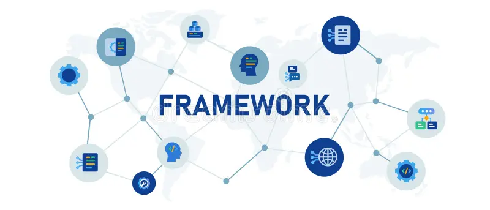

Full stack development is the process of creating both the front-end and back-end of an application.
Full stack developers work on the entire software stack, including the user interface, database, and logic.
Full Stack Development refers to the development of both front end (client side) and back end (server side) portions of web applications.
If you want to learn in full structure form then you should enrol in our Fullstack devlopment
You’ll learn to create powerful web applications from scratch, mastering both front-end and back-end skills.
Join us to transform your coding abilities and open doors to exciting career opportunities!

What frameworks are used in full stack development?
MEAN stack: A full-stack solution that uses
MongoDB, Express, AngularJS, and Node.js
Full-stack development frameworks:A collection of software tools that provide an end-to-end solution for web development
How long does it take to learn full stack development?
It can take around 3 months to learn full stack development if you dedicate 30-40 hours a week.
It can take around 6 months to learn full stack development if you dedicate 15-20 hours a week.
It can take around 9 months to learn full stack development if you dedicate 10-15 hours a week.
What is Full Stack Development? - AWS
Full stack development is the process of developing both the frontend and backend of applications. Any application has a frontend ...
AWS
How Difficult is it to Learn Full-Stack Web Development? - Noble Desktop
The most challenging parts of learning full stack web development include integrating multiple languages to build full systems, es...
Noble Desktop
The 7 Skills Every Full-Stack Developer Needs - Skillsoft
Tech Skills for Full-Stack Developers * Front-End Programming Languages and Frameworks. ... * Back-End Programming Languages and ...
Skillsoft
Show all
Generative AI is experimental.
Technology Related to Full Stack Development
Front-end Development
It is the visible part of website or web application which is responsible for user experience.
The user directly interacts with the front end portion of the web application or website.
Front-end Technologies
- HTML: stands for Hyper Text Markup Language. It is used to design the front end portion of web pages using markup language.
HTML is the combination of Hypertext and Markup language.
Hypertext defines the link between the web pages.
The markup language is used to define the text documentation within tag which defines the structure of web pages.
- CSS:Cascading Style Sheets, fondly referred to as CSS, is a simply designed language intended to simplify the process of making web pages presentable. CSS allows you to apply styles to web pages.
More importantly, CSS enables you to do this independent of the HTML that makes up each web page.
-
javascript:JavaScript is a famous scripting language used to create the magic on the sites to make the site interactive for the user.
It is used to enhancing the functionality of a website to running cool games and web-based software.
Front End Libraries and Frameworks
-
AngularJs:AngularJs is a JavaScript open source front-end framework that is mainly used to develop single page web applications(SPAs). It is a continuously growing and expanding framework which provides better ways for developing web applications. It changes the static HTML to dynamic HTML. It is an open source project which can be freely used and changed by anyone. It extends HTML attributes with Directives, and data is bound with HTML.
-
React.js: React is a declarative, efficient, and flexible JavaScript library for building user interfaces. ReactJS is an open-source, component-based front end library responsible only for the view layer of the application.
It is maintained by Facebook.